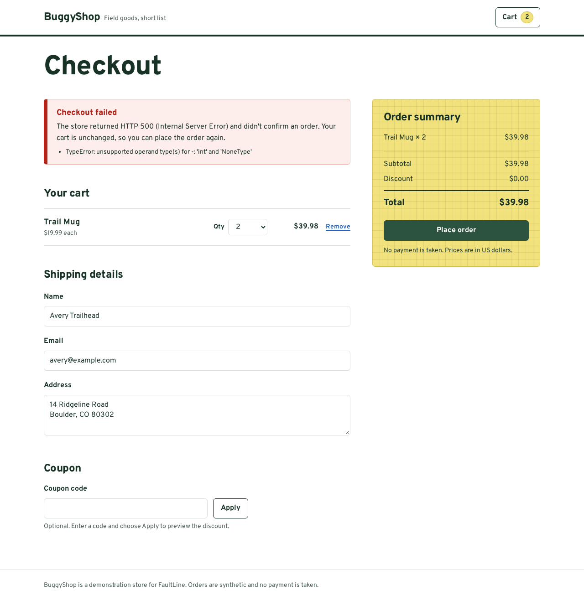
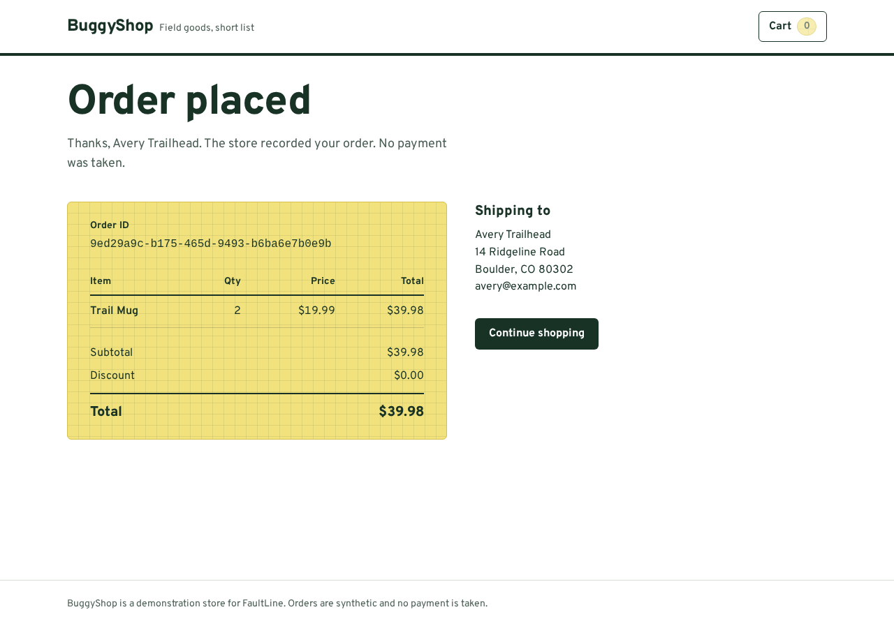

Meta Global AI Developer Hackathon, Indie Developer track. Built by Francis Bisignano.
A browser finds the checkout failure. A Meta model proposes a patch. Independent checks decide whether it works.
When an AI writes a hotfix, the error going away is not the same as the fix being right. FaultLine reproduces a real checkout crash in Chromium, asks Meta's muse-spark-1.3 for a one-file patch, and accepts it only after it passes a browser journey and 27 business checks inside an isolated, resource-limited runtime. Every number below comes from a recorded run, linked to its raw evidence.
Short on time? Three minutes, in this order
- See the recorded Meta repair: the failing checkout, the one-line patch, and the passing checkout.
- Pick a wrong patch and see why a "did it return 201?" check lets it through while FaultLine does not.
- Open the replay to read the raw record: all 44 assertions, logs, screenshots, and checksums. No install needed.
The recorded Meta repair
A customer buys two Trail Mugs and leaves the coupon field empty. The store crashes. The model was given the checkout's business rules and the failure evidence, never the name of the bug or its fix.
Before HTTP 500
Fresh Chromium session against the seeded store. The server raised TypeError at checkout.py line 44; 12 of 18 baseline assertions failed.


Baseline screenshot captured by the runner. Open for full size.
After HTTP 201
Same journey against the patched candidate in an isolated runtime. Order stored and read back; all 44 assertions passed.


Candidate screenshot captured by the runner. Open for full size.
muse-spark-1.3, first attempt
apps/buggyshop-backend/app/routes/checkout.py
@@ -43,7 +43,7 @@- discount = cast(int, discounts.get(coupon_code))+ discount = cast(int, discounts.get(coupon_code, 0)) total = subtotal - discount order: Order = { "id": str(uuid4()), "line_items": line_items, "subtotal": subtotal, "discount": discount,
Model's explanation, verbatim: "Empty/null coupon produced None discount causing TypeError on subtotal-discount. Default missing coupon lookup to 0 so absent/empty/whitespace means zero discount, while valid coupons still use integer arithmetic and invalid coupons still 400 before pricing."
- Model
- muse-spark-1.3Provider
meta, from the endpoint host - Attempts
- 1Verified on the first proposal
- Generation time
- 6.9 s6,863 ms recorded
- Tokens
- 3,2541,569 prompt, 1,685 completion
- Candidate checks
- 44 / 44Browser journey and 27 HTTP checks
- Whole job
- 13.0 sAdmission to cleanup
- Runtime limits
- 512 MiBNo swap, 64 tasks, 1 CPU; read back from the kernel
- Cleanup
- SucceededRecorded before the verdict was final
Job 3573b32b, recorded by the controller on October 28, 2026 at 22:43 UTC. All 16 files in the replay match its SHA256SUMS; a checksum shows the files are consistent with each other, not that a provider signed them. A second Meta job shows the retry path: Git refused to apply the first proposal (a zero-context hunk), the rejection was sent back to the model, and its second attempt was verified. See the provenance review.
What has to be true before a patch counts
Each gate can stop the job. A rejected first attempt sends its findings back to the model once.
- ReproduceA fresh Chromium session hits the failure, and the HTTP 500 is matched to the server's own error log.
- Ask for a bounded patchThe model returns a schema-checked, single-file unified diff. The prompt states the business contract, not the bug.
- Check the patch itselfStale source hashes, wrong paths, oversized or malformed diffs, syntax errors, forbidden imports, and catch-all exception handlers are rejected.
- Build from a pinned commitThe diff is applied to a fresh worktree of the pinned fixture. Tests and reference answers are kept out of the candidate.
- Run it in isolationBubblewrap namespaces with no network, plus a cgroup v2 scope whose memory, task, and CPU limits are read back from the kernel.
- Verify behaviorThe same browser journey, then 27 HTTP checks for coupons, pricing, validation, and storage, all written from the contract.
- Keep the evidence, clean upScreenshots, traces, logs, and reports are hashed into a bundle. A cleanup failure blocks new jobs.
Try to fool the gates
Eleven candidate patches for the same crash, from a hash-pinned corpus. Each was run through the same policy and isolated runtime. The naive check replays the customer's request and accepts any HTTP 201, which is what "the error went away" means. Pick one to see its recorded result.
Recorded October 28, 2026 under the deterministic and DeepSeek evaluation runs with identical results. Raw record: evaluation JSON. Patches: fixtures/evaluation/adversarial.
Defects the model was never told about
Nine more single-defect variants of the checkout route (rounding, normalization, pricing, validation, persistence) test whether the loop repairs bugs it has not seen. A Meta run of this corpus has not been recorded yet. To exercise the loop on real model output in the meantime, a non-Meta model was used and is labeled as such everywhere.
| Provider | Runs | Verified | What it shows |
|---|---|---|---|
| Deterministic fallback, no model call | 10 | 1 | Only the registered defect is repaired. The harness does not invent repairs. |
DeepSeek deepseek-v4-pro, not Meta | 20 | 18 | Two trials. In both, the gates rejected the model's wrong patch for the namespace defect; one retry succeeded after a specific rejection message. |
Meta muse-spark-1.3 | not run | – | Needs a configured |
Method, per-case results, and caveats: EVALUATION.md. This is an authored corpus for one route, not a benchmark of arbitrary applications.
Where to look, by judging criterion
No self-assigned scores. This maps each published criterion to the evidence that bears on it, including what is still missing.
| Criterion | What FaultLine shows | Evidence |
|---|---|---|
| Impact 30% |
Teams shipping AI-written hotfixes need to know a patch is right, not just that the error stopped. On this corpus a naive check would have shipped five of six wrong fixes, including one that drops orders silently. Not yet shown: user interviews or production use. |
Patch explorer Impact notes |
| Use of Meta AI tooling 25% |
Not yet shown: repeated Meta trials or a Meta run of the unfamiliar-defect corpus. |
One-attempt replay Two-attempt replay |
| Technical depth 20% |
Namespaced runtime with kernel-verified cgroup limits proven by an OOM and task-limit probe, AST and import policy, pinned fixture provenance, independent HTTP and browser oracles, checksummed evidence bundles, and cleanup that quarantines admission on failure. |
Orchestrator Quality review |
| Demo 25% |
Static replays that open in any browser, and a local Inspector that runs the whole job live: reproduce, propose, gate, verify, download evidence. |
Run it locally Deterministic replay |
Run it yourself
You need
- Linux with unprivileged user namespaces and Bubblewrap (
bwrap) - cgroup v2 with a systemd user session (a desktop terminal, not a bare SSH login)
- Git, Python 3.13 via
uv, and Node.js 24 or later
What you will see
- The Inspector at
127.0.0.1:4000; choose Run the demo - Without a Meta key the run uses
deterministic-checkout-v1, labeled as such. It is not a Meta trial. - With
META_API_KEYin an ignored.env, the same flow callsmuse-spark-1.3
git clone https://github.com/FrankieBiz/Faultline.git
cd Faultline
make setup
make check
./scripts/start-demo.sh./scripts/rehearse-demo.sh # end-to-end job; exits non-zero unless verified and cleaned up
./scripts/demo-chaos.sh # terminal walkthrough: containment probe and rejected wrong patchesPorts 3000, 4000, 8000, or 9000 already taken? The launcher reports occupied ports instead of killing their owners. Pick other ports, and point the rehearsal at the matching Inspector:
BUGGYSHOP_API_PORT=8400 FAULTLINE_PORT=9400 BUGGYSHOP_PORT=3400 INSPECTOR_PORT=4400 ./scripts/start-demo.sh
FAULTLINE_INSPECTOR_URL=http://127.0.0.1:4400 ./scripts/rehearse-demo.shWhat this does not claim
- One registered live defect in one fixture store, plus an authored corpus of ten defects and eleven patches for the same route.
- A verified result is a candidate with evidence. Nothing is deployed, merged, or routed to production traffic.
- Namespaces and cgroup limits on a shared kernel, not a VM, and no seccomp filter. Passing the suite is evidence for the tested behavior, not proof that arbitrary code is safe.
- One retained Meta repair and one Meta retry are recorded; repeated Meta trials and a Meta corpus run are still outstanding.
- The replay's two Playwright trace archives include file paths from the build workstation.